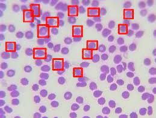

Check Out Some of My Projects.
Head to my Github profile to view all of my projects
Human Detection & Tracking
- Developed a C++ module using Yolov5s for human detection which outputs the location directly in the robot reference frame.
- Implemented the Agile Iterative Process with Doxygen documentation and extensive unit testing using Gtest.

RRT-star implementation for mobile delivery robot
- Developed a module to launch Turtlebot as a delivery robot in a custom Gazebo world with houses and a charging station for the robot.
- Implemented rrt-star to plan efficient paths between the delivery points and the charging station to reduce downtime of the robot.
- Simulated the whole system in Gazebo using ROS and OpenCV for visualizing the path planning for the robot.
Affine Structure from Motion
- Implemented Harris corner detection algorithm and obtained the tracking points for an image belonging to a sequence.
- Implemented Lucas-Kanade optical flow algorithm to track the corners and built the measurement matrix D (2m x n).
- Obtained the motion and structure matrix by factorizing D and eliminated ambiguity by Cholesky decomposition.

Autonomous Ground Vehicle
- Designed and built a wheeled robot to perform autonomous collection of specific objects from a cluttered environment.
- Developed a localization method by fusing data from IMU (BNO055), ultrasonic sensor, and wheel odometry.
- Created an objection detection and navigation schema using machine vision.

Uncalibrated Stereo Vision
- Utilized ORB feature detection and estimated fundamental matrix using RANSAC and homography to rectify the images.
- Implemented block matching with Sum of Squared Differences (SSD) from scratch to generate the disparity map.
- Computed the depth map from the disparity, baseline, and focal length values using the linear triangulation method.
Real-time Semantic Segmentation
- Developed a custom encoder-decoder architecture using DenseNet169 for real-time scene understanding on the Cityscapes dataset, Improved the mIoU from 45% to 77.5% by implementing a custom Multi-Class Focal Loss in PyTorch to address class imbalance.

Autonomous Warehouse Inspection
- Developed an autonomous robot, using ROS2 Nav2 stack in Gazebo capable of defect/hazardous-event detection on a factory floor.
- Implemented the Agile process, including UML diagrams, unit tests, and a project package with githubCI and codecov code coverage.

Malaria Detection using Convolution Neural Network (CNN)
Developed a Computer Aided Detection System for the classification of Malaria infected cells in thin blood smear images using a custom CNN network trained on the National Library of Medicine Malaria Dataset achieved a F1 score of 96.02%.